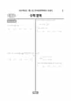

문제지

전국연합학력평가 · 시·도교육청 주관
2025년 7월 고3 학력평가 수학 미적분 1등급컷은 원점수 84점(비공식), 표준점수 최고점은 148점입니다.
원점수 1등급컷은 공식 발표값이 아니라 EBSi·입시기관 값입니다. 등급별 값은 등급컷 표, 출처 구분은 데이터 원칙에 있습니다.

시험지를 먼저 풀어 보세요. 등급컷·표준점수·난이도는 흐리게 가려 뒀어요.
| 등급 | 원점수 | 표준점수 | 백분위 | 누적 |
|---|---|---|---|---|
| 1 | 84 | 135 | 96 | 4.64% |
| 2 | 75 | 127 | 89 | 11.05% |
| 3 | 64 | 118 | 77 | 23.72% |
| 4 | 50 | 106 | 60 | 40.84% |
| 5 | 33 | 91 | 40 | 60.55% |
| 6 | 20 | 80 | 23 | 77.78% |
| 7 | 15 | 76 | 12 | 90.66% |
| 8 | 11 | 73 | 3 | 97.38% |
등급별 컷 · 원점수는 EBSi·입시기관 값(비공식) · 만점 100점
| 등급 | 표준점수 이상 | 인원(명) | 비율 |
|---|---|---|---|
| 1 | 135 | 14,227 | 4.64% |
| 2 | 127 | 19,679 | 6.41% |
| 3 | 118 | 38,887 | 12.67% |
| 4 | 106 | 52,544 | 17.12% |
| 5 | 91 | 60,494 | 19.71% |
| 6 | 80 | 52,874 | 17.23% |
| 7 | 76 | 39,534 | 12.88% |
| 8 | 73 | 20,618 | 6.72% |
| 9 | 65 | 8,029 | 2.62% |
수학 영역 전체 응시자 기준이에요.
출처: 시·도교육청이 공개한 전국연합학력평가 성적 분석·통계자료(공개 자료 보기).
EBSi 응답자 기준으로 가장 많이 틀린 문항은 30번(4점, 주관식)이고, 오답률은 96.9%입니다. 상위 15문항 중 1문항은 정답보다 한 오답을 고른 사람이 더 많았습니다(15번: 정답 ① 22.4%, ⑤ 23.2%). 오답률 50%를 넘은 문항은 9개입니다.
| 순위 | 문항 | 배점 | 오답률 | 정답 | 많이 고른 오답 |
|---|---|---|---|---|---|
| 1 | 30번 | 4점 | 96.9% | 72 | 주관식 |
| 2 | 22번 | 4점 | 92.4% | 76 | 주관식 |
| 3 | 21번 | 4점 | 86.5% | 28 | 주관식 |
| 4 | 20번 | 4점 | 80.6% | 24 | 주관식 |
| 5 | 15번 | 4점 | 77.6% | ① | ⑤ 23.2% |
| 6 | 29번 | 4점 | 77.3% | 16 | 주관식 |
| 7 | 28번 | 4점 | 75.2% | ② | ③ 21.4% |
| 8 | 14번 | 4점 | 68% | ② | ④ 21.7% |
| 9 | 13번 | 4점 | 51.4% | ⑤ | ④ 20.5% |
| 10 | 10번 | 4점 | 45.8% | ③ | ④ 14% |
| 11 | 19번 | 3점 | 43.4% | 10 | 주관식 |
| 12 | 27번 | 3점 | 39.9% | ⑤ | ④ 14.3% |
| 13 | 7번 | 3점 | 39.6% | ④ | ⑤ 11.5% |
| 14 | 12번 | 4점 | 39% | ② | ④ 14.5% |
| 15 | 26번 | 3점 | 38.1% | ② | ① 18.1% |
EBSi 가채점 응답자 기준 · 전 문항 중 오답률 상위 15문항
출처: EBSi 역대 등급컷·오답률 공개 화면. 가채점에 참여한 EBSi 이용자 응답이라 전체 응시자 정답률과는 다를 수 있습니다.
발행 기관: 시·도교육청(전국연합학력평가). 파일 위치: 이 사이트가 보관한 사본. 저작권은 발행 기관에 있습니다. 원본과 다르거나 게시 중단이 필요하면 연락처로 알려 주세요. 등급컷 출처 구분은 데이터 원칙에서 설명합니다.
막대 색은 역대 대비 난이도 · 진한 막대가 이 시험 · 막대를 누르면 그 회차로 이동
| 회차 | 1등급컷 | 표점 최고 | 1등급 표점 | 난이도 |
|---|---|---|---|---|
| 7월 학평2025년 고3이 시험 | 84 | 148 | 135 | 매우 쉬움 |
| 5월 학평2025년 고3 | 76 | 156 | 135 | 보통 |
| 3월 학평2025년 고3 | 76 | 157 | 136 | 보통 |
| 10월 학평2024년 고3 | 83 | 151 | 136 | 쉬움 |
| 7월 학평2024년 고3 | 76 | 156 | 135 | 어려움 |
| 5월 학평2024년 고3 | 74 | 167 | 141 | 매우 어려움 |
| 3월 학평2024년 고3 | 79 | 154 | 137 | 어려움 |
| 10월 학평2023년 고3 | 81 | 150 | 135 | 쉬움 |
| 7월 학평2023년 고3 | 77 | 157 | 136 | 어려움 |
| 4월 학평2023년 고3 | 73 | 162 | 136 | 어려움 |
공통과목 22번(4점, 92.4%)은 모든 항이 자연수이고 주어진 조건을 만족시키는 수열을 모두 찾는 문항, 21번(4점, 86.5%)은 함수의 그래프 위의 점에서 그은 접선을 다룬 문항이었습니다.
20번(80.6%)은 두 실수에 따라 정해지는 함수와 집합 조건을 다룬 문항, 객관식 15번(77.6%)과 14번(68.0%)도 오답률이 높았습니다.
미적분 30번(4점, 96.9%)은 코사인함수가 포함된 함수의 역함수와 도함수가 연속인 함수를 다룬 문항으로, 미적분 응시자 기준 이 회차 오답률 1위였습니다. 29번(77.3%)과 28번(75.2%)도 오답률이 높았습니다.
미적분 30번처럼 역함수와 도함수가 함께 걸린 문항은 역함수의 미분계수가 원래 함수 미분계수의 역수라는 관계를 먼저 쓰고, 정적분은 y=x 대칭으로 넓이를 바꿔 생각하는 연습이 효과적입니다.